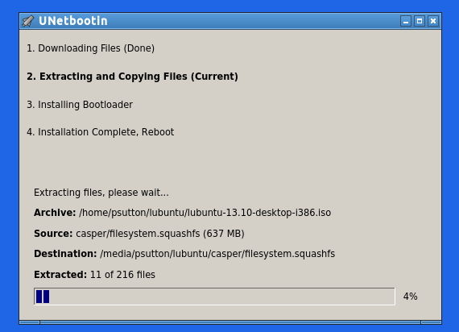

The ubuntu manual should have this information in it too.
man unetbootin
man fdisk
man ls
man df
If you need to format the flash disk, using disks, this is a case of
Unmount the flash disk
Select format
MAKE SURE YOU HAVE THE RIGHT DEVICE SELECTED.
Once this is all done and you are happy with the destination click OK
Progress bar showing how many files have been copied and a percentage

All done you can now reboot, select usb disk from the boot device menu (see your Manual on how to access this) and tryout / install the new OS
unetbootin also works from Windows / Mac